수질환경산업기사 (2007-08-05 기출문제)
1과목: 수질오염개론
1. 물의 동점성계수를 가장 알맞게 나타낸 것은?
- 전단력τ를 점성계수 μ로 나눈 값이다.
- 전단력τ를 밀도 ρ로 나눈 값이다.
- 점성계수μ를 전단력τ로 나눈 값이다.
- 점성계수μ를 밀도ρ로 나눈 값이다.
(정답률: 알수없음)

2. Ca(OH)2 800㎎/L 용액의 pH는? (단, Ca(OH)2 완전해리, Ca : 40)
- 약 12.1
- 약 12.3
- 약 12.7
- 약 12.9
(정답률: 알수없음)
3. 수소이온농도가 7.3 × 10-9mol/ℓ 일 때 pH는?
- 8.14
- 8.34
- 8.74
- 8.94
(정답률: 알수없음)
4. 다음 그림은 일반적인 하천에 유기물질이 배출되었을 때 하천의 수질을 나타낸 것이다. 그림 중 (2)곡선이 나타내는 수질지표로 가장 적절한 것은?
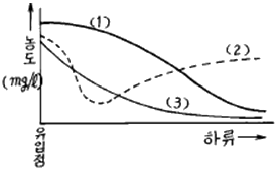
- DO
- BOD
- SS
- COD
(정답률: 알수없음)
5. 묽은 질산 30%(W/W%, 비중 = 1.15)20㎖ 중에는 순수한 질산 몇 g이 있는가?
- 5.4g
- 6.9g
- 7.6g
- 8.3g
(정답률: 알수없음)
6. 탈산소계수가 0.1/day의 오염물질의 BOD5가 800mg/L이라면 4일 BOD(mg/L)는? (단, 상용대수 적용)
- 653
- 685
- 704
- 732
(정답률: 알수없음)
7. 자정계수(f)에 관한 다음 설명 중 잘못 된 것은?
- 수온이 높아지면 자정계수(f)는 증가한다.
- 유속이 빠르고 하상의 구배가 클수록 재폭기계수는 증가한다.
- 자정계수(f)는 [재폭기계수/탈산소계수]이다.
- 유기물질의 구조가 간단할수록 탈산소계수는 증가한다.
(정답률: 알수없음)
8. 다음은 물의 특성을 나타내는 값이다. 틀린 것은?
- 비점 : 100℃(1기압하)
- 비열 : 1.0cal/g℃ (15℃)
- 기화열 : 539cal/g(100℃)
- 융해열 : 179.4cal/g(0℃)
(정답률: 알수없음)
9. 글루코스(C6H12O6)를 300mg/ℓ 함유하고 있는 시료용액의 총유기탄소의 이론치는?
- 120mg/ℓ
- 130mg/ℓ
- 140mg/ℓ
- 150mg/ℓ
(정답률: 알수없음)
10. 세균의 수가 ㎖당 1000마리가 검출되었는데 이 물을 염소농도 0.5ppm으로 소독하여 80% 죽이는데 시간이 10분이 소요되었다. 최종 세균수를 50마리까지만 허용한다면 시간이 몇 분 걸리겠는가?
- 약 12분
- 약 15분
- 약 17분
- 약 19분
(정답률: 알수없음)
11. HCHO(Formaldehyde)250mg/L의 이론적 COD값은?
- 267mg/L
- 287mg/L
- 307mg/L
- 327mg/L
(정답률: 알수없음)
12. 화학합성 자가영양 미생물계의 에너지원과 탄소원으로 가장 알맞은 것은?
- 빛 , CO2
- 무기물의 산화환원반응 , CO2
- 빛 , 유기탄소
- 유기물의 산화환원반응 , 유기탄소
(정답률: 알수없음)
13. 유해물질과 그것에 의해 발생되는 건강피해와 연결이 잘못된 것은?
- 수은 - 경구염 , 수족의 떨림
- 카드뮴 - 골연화증, 이타이이타이병 발생
- 유기인 - 칼슘기능저하 , 법랑반점
- 비소 - 각화증 , 발암
(정답률: 알수없음)
14. 현재의 BOD가 1mg/L이고 유량이 200000m3/day인 하천주변에 양돈단지를 조성하고자 한다. 하천의 환경기준이 BOD 5mg/L이하인 하천에서 환경기준치 이하로 유지시키기 위한 최대 사육돼지의 마리수는? (단, 돼지 사육으로 인한 하천의 유량증가는 무시하고 돼지 1마리당 BOD배출량은 0.2kg/day로 본다.)
- 2000마리
- 3000마리
- 4000마리
- 5000마리
(정답률: 알수없음)
15. 0.04M-NaOH용액의 농도는 몇 mg/ℓ 인가?
- 1000
- 1200
- 1400
- 1600
(정답률: 알수없음)
16. 이상적인 플러그 흐름상태를 나타내는 반응조의 “분산수”로 가장 알맞은 것은?
- 무한대일 때
- -1일때
- 1일때
- 0일때
(정답률: 알수없음)
17. 하천의 수질모델인 DO Sag-ⅠㆍⅡ 에 관한 설명으로 틀린 것은?
- 1차원 정상상태 모델이다.
- Streeter - Phelps 식을 기본으로 한다.
- 점오염원과 비점오염원이 하천에 DO에 미치는 영향을 나타낼 수 있다.
- 저질의 영향이나 광합성 작용에 의한 DO반응을 나타낸다.
(정답률: 알수없음)
18. 물의 밀도가 가장 큰 값을 나타내는 온도는?
- -10℃
- 0℃
- 4℃
- 10℃
(정답률: 알수없음)
19. 다음은 질소의 환경조건 및 시간 경과에 따른 분해과정을 나타낸 것이다. 빈 곳에 해당되는 적합한 질소의 형태를 바르게 나타낸 것은?
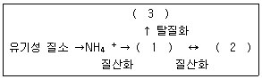
- ① NH3 ② NO3- ③ NO2-
- ① NO3- ② NO2- ③ N2
- ① NO2- ② NO3- ③ N2
- ① NO2- ②. N2 ③ NO3-
(정답률: 알수없음)
20. 자연수 중 지하수의 경도가 높은 이유는 다음 중 주로 어떤 물질의 영향인가?
- NH3
- O2
- Colloid
- CO2
(정답률: 알수없음)
2과목: 수질오염방지기술
21. 다음의 생물학적 인 및 질소제거 공정 중 질소 제거를 주목적으로 개발한 공법으로 가장 적절한 것은?
- 4단계 Bardenpho 공법
- A2/O공법
- A/O 공법
- Phostrip공법
(정답률: 알수없음)
22. 호기성 Lagoon의 BOD용적부하는 0.4kgBOD/m3ㆍday이다. Lagoon의 수심을 1.5m로 하면 표면적은? (단, 폐수의 BOD 300mg/L , 폐수량 2000m3/day이다.)
- 700m2
- 800m2
- 900m2
- 1000m2
(정답률: 알수없음)
23. 활성슬러지공법을 이용한 처리장의 2차 침전지에서 일어나는 현상으로 Denitrification과 관계 있는 것은?
- Sludge rising 현상
- 슬러지 팽화 현상
- 생물막 탈리 현상
- Pin floc현상
(정답률: 알수없음)
24. 고도 수처리에 이용되는 분리방법 중 “투석”의 구동력으로 알맞은 것은?
- 정수압차(0.1 - 1Bar)
- 정수압차(20 - 100Bar)
- 전위차
- 농도차
(정답률: 알수없음)
25. 어떤 공장의 폐수처리장 침전지에 유입하는 폐수량이 400m3/d , 폐수의 오염물질 농도(SS)는 500mg/ℓ , 오염물질처리효율이 90%일 때, 이 침전지에서 발생되는 슬러지의 용적은? (단, 슬러지의 비중은 1.0 , 슬러지의 함수율은 97%이며 SS만 고려함(생물학적 분해는 고려하지 않음))
- 약 6m3/d
- 약 8m3/d
- 약 10m3/d
- 약 12m3/d
(정답률: 알수없음)
26. 하수고도처리에 적용하는 생물학적 인제거 공정인 연속회분식 반응조에 관한 설명으로 틀린 것은?
- 설계자료가 제한적이다.
- 소유량에 적합하다.
- 수리학적 과부하에도 MLSS의 누출이 없다.
- 질소, 인 동시 제거시 운전의 유연성이 적다.
(정답률: 알수없음)
27. 하수소독시 사용되는 이산화염소에 관한 설명으로 틀린 것은?
- THMs이 형성되지 않는다.
- 염소에 비하여 산화력이 강하다.
- 소독력이 pH영향을 크게 받는다.
- 일정농도 이상에서는 폭발 위험성이 있다.
(정답률: 알수없음)
28. 역삼투법으로 하루에 100m3의 3차 처리 유출수를 탈염하기 위해 소요되는 막의 면적은?
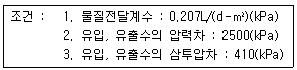
- 221m2
- 231m2
- 241m2
- 251m2
(정답률: 알수없음)
29. 다음 중 보통 1차 침전지에서 부유물질의 침전속도가 작게 되는 경우는? (단, stokes법칙적용)
- 부유물질 입자의 밀도가 클 경우
- 부유물질 입자의 입경이 클 경우
- 처리수의 밀도가 작을 경우
- 처리수의 점성도가 클 경우
(정답률: 알수없음)
30. 다음 중 슬러지 처리 공정으로 옳은 것은?
- 안정화 → 개량 →농축 → 탈수 → 소각
- 농축 → 안정화 → 개량 → 탈수 → 소각
- 개량 → 농축 → 안정화 → 탈수 →소각
- 탈수 → 개량 → 안정화 → 농축 → 소각
(정답률: 알수없음)
31. 활성오니방법으로 처리하는 하수처리장의 유입수의 성상이 BOD 1400ppm, SS 480ppm, 인 50ppm 이고 질소가 10ppm일 때 질소가 부족하여 요소[(NH2)2CO]를 추가 투입하려 한다. 최적 조건을 위한 요소의 추가 투입량(농도)은? (단, BOD : N :P = 100 : 5 : 1 의 조건이 최적이라 가정함)
- 약 129mg/L
- 약 189mg/L
- 약 219mg/L
- 약 249mg/L
(정답률: 알수없음)
32. 생물막을 이용한 처리공법인 접촉산화법에 관한 내용 중 틀린 것은?
- 분해속도가 낮은 기질제거에 효과적이다.
- 매체에 생성되는 생물량은 부하조건에 의하여 결정된다.
- 미생물량과 영향인자를 정상상태로 유지하기 위한 조작이 용이하다.
- 슬러지 반송이 필요 없으며 수온의 변동에 강하다.
(정답률: 알수없음)
33. 물의 혼합정도를 나타내는 속도경사 G를 구하는 공식은?
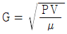
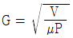
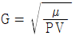
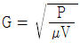
(정답률: 알수없음)
34. SS가 20000ppm인 분뇨를 전처리에서 15% 그리고 1차 처리에서 70%의 SS를 제거하였을때 1차 처리 후 유출되는 분뇨의 SS농도는?
- 7100ppm
- 6100ppm
- 5100ppm
- 4100ppm
(정답률: 알수없음)
35. 유입수의 BOD5가 180mg/L, 유출수의 BOD5가 10mg/L인 하수가 활성슬러지 공정으로 처리된다. 폭기조 용적이 1000m3이고 MLSS 2000mg/L, 반송슬러지 SS농도는 8000mg/L, 고형물 체류시간은 5일로 운전하고 있다. 방류수의 SS농도는 무시하고 고형물체류시간을 5일로 유지하기 위해 폐기하여야 하는 슬러지양(m3/일)은?
- 13
- 25
- 50
- 75
(정답률: 알수없음)
36. 정수처리시 색도(자연적 원인에 의한 색도)를 제거하기 위한 처리방식과 가장 거리가 먼 것은?
- 응집침전처리
- 활성탄처리
- 이온교환처리
- 오존처리
(정답률: 알수없음)
37. BOD 230mg/ℓ인 폐수가 폭기조 BOD 부하 0.4kg BOD/kg MLSS ㆍ day인 활성 슬러지법으로 6시간 폭기할 때 MLSS농도(mg/ℓ)는?
- 2100mg/ℓ
- 2200mg/ℓ
- 2300mg/ℓ
- 2400mg/ℓ
(정답률: 알수없음)
38. 다음 액체염소의 주입으로 생성된 유리염소 , 결합잔류염소의 살균력이 바르게 나열된 것은?
- HOCl ＞ Chloramines ＞ OCl-
- HOCl ＞ OCl- ＞ Chloramines
- OCl- ＞ Chloramines ＞HOCl
- OCl- ＞HOCl ＞ Chloramines
(정답률: 알수없음)
39. 하수고도처리 공정 중 단일단계 질산화공정(부유성장식)에 관한 설명으로 틀린 것은?
- 독성물질에 대한 질산화 저해 방지 가능
- BOD와 암모니아성 질소 동시제거 가능
- 온도가 낮을 경우에는 반응조 용적이 매우 크게 소요
- 운전의 안정성은 미생물 반송을 위한 이차 침전지의 운전에 좌우됨
(정답률: 알수없음)
40. 혐기성 소화가 호기성 소화에 비해 지닌 장점으로 틀린 것은?
- 미생물 성장속도가 빠르다.
- 처리 후 슬러지 생성량이 적다.
- 동력비가 적게 든다.
- 유지관리비가 적게 든다.
(정답률: 알수없음)
3과목: 수질오염공정시험방법
41. 순수한 물 150㎖에 에틸알코올(비중 0.79) 80㎖를 혼합하였을 때 이 용액중의 에틸알코올 농도(W/W%)는?
- 약 30%
- 약 35%
- 약 40%
- 약 45%
(정답률: 알수없음)
42. 폴리에틸렌 재질의 채수병을 사용하여 채취할 수 없는 시료는?
- 인산염인이 포함된 시료
- 유기인이 포함된 시료
- 6가크롬이 포함된 시료
- 불소가 포함된 시료
(정답률: 알수없음)
43. 휘발성 탄화수소의 시료보존 방법으로 가장 적절한 것은?
- 인산(1+10)을 1방울/10mL로 가하여 4℃ 냉암소보존
- 인산(1+10)을 1방울/100mL로 가하여 4℃ 냉암소보존
- 염산(1+5)을 1방울/10mL로 가하여 4℃냉암소보존
- 염산(1+5)을 1방울/100mL로 가하여 4℃냉암소보존
(정답률: 알수없음)
44. 원자흡광 광도계에 사용되는 가장 일반적인 불꽃 조성가스는?
- 산소 - 공기
- 아세틸렌 - 공기
- 프로판 - 산화질소
- 아세틸렌 - 질소
(정답률: 알수없음)
45. 색도측정법(투과율법)에 관한 설명 중 틀린 것은?
- 아담스 - 니컬슨의 색도공식을 근거로 한다.
- 시료 중 백금- 코발트 표준물질과 아주 다른 색상의 폐하수는 적용할 수 없다.
- 색도의 측정은 시각적으로 눈에 보이는 색상에 관계없이 단순 색도차 또는 단일 색도차를 계산한다.
- 시료중 부유물질은 제거하여야 한다.
(정답률: 알수없음)
46. 공정시험방법상 불소 측정방법으로 가장 적절한 것은?
- 흡광광도법 - 가스크로마토그래피법
- 흡광광도법 - 원자흡광광도법
- 흡광광도법 - 이온전극법
- 흡광광도법 - 유도결합플라스마 발광광도법
(정답률: 알수없음)
47. BOD측정시 시료의 전처리에 관한 내용이다.( )안에 내용으로 맞는 것은?
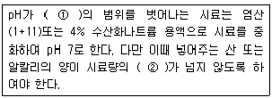
- ① pH6.5 ~ 7.5, ② 0.5%
- ① pH6.5 ~ 8.5, ② 0.5%
- ① pH6.5 ~ 7.5, ② 0.3%
- ① pH6.5 ~ 8.5, ② 0.3%
(정답률: 알수없음)
48. 총대장균군 측정(최적확수 시험법)에 사용되는 기구 및 장치에 관한 설명으로 틀린 것은?
- 배양기의 배양 온도는 35±0.5℃로 유지할 수 있는 것을 사용한다.
- 백금이는 고리의 안 지름이 약 3mm인 것을 사용한다.
- 페트리접시는 지름 약 9cm, 높이 약 1.5cm의 유리제품이나 1회용 플라스틱 제품으로 멸균된 것을 사용한다.
- 다람관은 안지름 3mm , 높이 10mm 정도의 시험관으로 고압증기 멸균 할 수 있어야 한다.
(정답률: 알수없음)
49. 납(Pb)의 정량방법 중 디티존법에 의한 흡광광도법에 사용되는 시약이 아닌 것은?
- 염산히드록실아민용액
- 구연산 이암모늄용액
- 암모니아수
- 시안화칼슘용액
(정답률: 알수없음)
50. 다음은 구리의 측정원리에 관한 내용이다. ( )안에 알맞은 내용은?
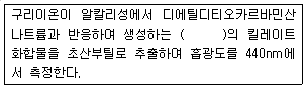
- 적자색
- 청록색
- 적갈색
- 황갈색
(정답률: 알수없음)
51. 다음 중 총질소 분석방법이 아닌 것은?
- 흡광광도법
- 카드뮴 환원법
- 환원 증류 - 킬달법(합산법)
- 아스코르빈산환원법
(정답률: 알수없음)
52. 다음 중 흡광광도법에서 자외부 파장범위에 이용되는 흡수셀의 재질은?
- 유리
- 석영
- 플라스틱
- 비닐
(정답률: 알수없음)
53. 예상 BOD값에 대한 사전경험이 없을때 BOD시험을 위한 시료용액 조제 희석기준에 관한 설명 중 옳지 않은 것은?
- 오염된 하천수는 25 ~ 50%의 시료가 함유하도록 희석, 조제한다.
- 처리하여 방류된 공장폐수는 5 ~ 25%의 시료가 함유하도록 희석, 조제한다.
- 처리하지 않은 공장폐수는 1 ~ 5%의 시료가 함유하도록 희석, 조제한다.
- 강한 공장폐수는 0.1 ~ 1.0%의 시료가 함유하도록 희석, 조제한다.
(정답률: 알수없음)
54. 다음 중 전기전도도와 관계가 가정 먼 용어는?
- mho
- ohm-1
- siemens
- Luminance
(정답률: 알수없음)
55. 가스크로마토그래피법에서 사용되는 검출기 중 인 또는 황화합물을 선택적으로 검출할 수 있는 것으로 가장 알맞은 것은?
- 열전도도 검출기(TCD)
- 불꽃이온화 검출기(FID)
- 전자포획형 검출기(ECD)
- 불꽃광도형 검출기(FPD)
(정답률: 알수없음)
56. 시료의 보존 방법 중 틀린 것은?
- 암모니아성 질소 : 황산을 가하여 pH2이하로 만든 후 4℃에서 보관한다.
- 시안(잔류염소 없음) : NaOH를 가하여 pH12이상으로 만든 후 4℃에서 보관한다.
- 유기인 : 황산을 가하여 pH4이하로 만든후 4℃에서 보관한다.
- 6가크롬 : pH조정없이 4℃에서 보관한다.
(정답률: 알수없음)
57. 공정시험방법상 6가크롬을 측정하는 방법이 아닌 것은?
- 원자흡광광도법
- 진콘법
- 유도결합플라스마 발광광도법
- 디페닐가크바지드법
(정답률: 알수없음)
58. 취급 또는 저장하는 동안에 기체 또는 미생물이 침입하지 아니하도록 내용물을 보호하는 용기는?
- 차광용기
- 밀봉용기
- 기밀용기
- 밀폐용기
(정답률: 알수없음)
59. 흡광광도법에서 흡광도 값이 1이란 무엇을 의미하는가?
- 입사광의 1%의 빛이 액층에 의해 흡수된다.
- 입사광의 10%의 빛이 액층에 의해 흡수된다.
- 입사광의 90%의 빛이 액층에 의해 흡수된다.
- 입사광의 100%의 빛이 액층에 의해 흡수된다.
(정답률: 알수없음)
60. 유량 측정시 적용되는 위어의 위어판에 관한 기준으로 알맞은 것은?
- 위어판 안측의 가장자리는 곡선이어야 한다.
- 위어판은 수로의 장축(長軸)에 직각이거나 또는 수직으로 하여 말단의 바깥틀에 누수가 없도록 고정한다.
- 직각 3각 위어판의 유량측정공식은 Q = Kㆍbㆍh3/2이다.(K:유량계수, b:수로폭, h:수두)
- 위어판의 재료는 10mm 이상의 두께를 갖는 내구성이 강한 철판으로 하여야 한다.
(정답률: 알수없음)
4과목: 수질환경관계법규
61. 수질 및 수생태계 보전에 관한 법률 상 환경기술인의 교육을 받게 하지 아니한 자에 대한 과태료 처분기준은?
- 과태료 300만원 이하
- 과태료 200만원 이하
- 과태료 100만원 이하
- 과태료 50만원 이하
(정답률: 알수없음)
62. 시장, 군수, 구청장이 호소에 낚시금지구역 또는 낚시제한구역을 지정하고자 하는 경우에 고려할 사항과 가장 거리가 먼 것은?
- 서식 어류의 종류 , 양 등 수중생태계 현황
- 낚시터 인근에서의 쓰레기 발생현황 및 처리여건
- 수질오염도
- 계절별 낚시인구 현황
(정답률: 알수없음)
63. 다음은 폐수처리업자의 준수사항에 관한 내용이다. ( )안에 알맞은 내용은?
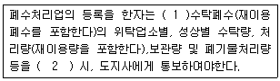
- ① 월별로, ② 다음월이 시작 후 10일 이내에
- ① 분기별로, ② 다음분기의 시작 후 10일 이내에
- ① 반기별로, ② 다음반기의 시작 후 10일 이내에
- ① 년도별로, ② 다음년의 시작후 10일 이내에
(정답률: 알수없음)
64. 수질환경보전법에 사용되는 용어의 정의로 틀린 것은?
- 강우 유출수 : 비점오염원의 수질오염물질이 섞여 유출되는 빗물 또는 눈녹은 물 등을 말한다.
- 불투수층 : 빗물 또는 눈 녹은 물 등이 지하로 스며들 수 없게 하는 아스팔트 , 콘크리트 등으로 포장된 도로, 주차장, 보도 등을 말한다.
- 기타수질오염원 : 점오염원으로 관리 되지 않는 수질오염물질을 배출하는 오염원으로 대통령령이 정하는 것을 말한다.
- 수질오염방지시설 : 점오염원, 비점오염원 및 기타 수질 오염원으로부터 배출되는 수질오염물질을 제거하거나 감소하게 하는 시설로서 환경부령으로 정하는 것을 말한다.
(정답률: 알수없음)
65. 폐수처리업 중 폐수재이용업의 영업내용으로 가장 알맞은 것은?
- 수탁한 폐수를 제품의 원료, 재료 등으로 재생ㆍ이용하는 영업
- 수탁한 폐수를 처리하여 재활용 가능하도록 하는 영업
- 폐수처리시설을 갖추고 수탁한 폐수를 처리하여 재생하는 영업
- 폐수처리시설을 갖추고 수탁한 폐수를 처리하여 재이용하는 영업
(정답률: 알수없음)
66. 위임업무보고사항 중 배출부과금 부과실적 보고 횟수로 적절한 것은?(오류 신고가 접수된 문제입니다. 반드시 정답과 해설을 확인하시기 바랍니다.)
- 연 2회
- 연 4회
- 연 6회
- 연 12회
(정답률: 알수없음)
67. 폐수종말처리시설의 관리, 운영자가 처리시설의 적정운영여부를 확인하기 위하여 실시하여야 하는 방류수수질의 검사 주기로 적절한 것은? (단, 처리시설은 2000m3/일 미만)
- 매분기 1회 이상
- 매분기 2회 이상
- 월 2회 이상
- 월 1회 이상
(정답률: 알수없음)
68. 기술요원 및 환경기술인 교육과정의 기간 기준은?
- 3일 이내
- 5일 이내
- 7일 이내
- 10일 이내
(정답률: 알수없음)
69. 수질 및 수생태계 환경기준으로 하천에서 사람의 건강보호 기준이 다른 수질오염물질은?
- 납
- 6가크롬
- 비소
- 카드뮴
(정답률: 알수없음)
70. 폐수 재이용업 등록기준에 관한 내용 중 알맞지 않는 것은?
- 기술능력 : 수질환경산업기사 1인 이상
- 폐수운반차량 : 청색으로 도장하며 흰색바탕에 녹색글씨로 회사명 등을 표시한다.
- 저장시설 : 원폐수 및 재이용후 발생되는 폐수의 저장시설은 각각 폐수 재이용시설능력의 2배 이상을 저장할 수 있어야 한다.
- 운반장비 : 폐수운반장비는 용량2m3이상의 탱크로리, 1m3이상의 합성수지제 용기가 고정된 차량, 20L이상의 합성수지제용기(유가품인 경우에 한한다)이어야 한다.
(정답률: 알수없음)
71. 다음 중 수질환경보전법에서 정의하는 공공수역이 아닌 것은?
- 지하수로
- 연안해역
- 농업용수로
- 상수관거
(정답률: 알수없음)
72. 다음의 오염물질 중 특정수질유해물질에 해당되지 않는 것은?
- 구리 및 그 화합물
- 테트라클로로에틸렌
- 불소화합물
- 트리클로로에틸렌
(정답률: 알수없음)
73. 수질오염방지시설 중 화학적 처리시설에 해당되는 것은?
- 흡착시설
- 폭기시설
- 접촉조
- 응집시설
(정답률: 알수없음)
74. 대권역 수질 및 수생태계보전계획에 포함되어야 할 사항과 가장 거리가 먼 것은?
- 수질오염 예방 및 저감대책
- 점오염원, 비점오염원 및 기타 수질오염원에 의한 수질오염물질 발생량
- 하수도관망 분포 및 계획
- 수질 및 수생태계 변화 추이 및 목표수질
(정답률: 알수없음)
75. 수질오염경보단계가 조류대발생경보시 유역,지방환경청장 (시도지사)가 조치하여야 할 사항과 가장 거리가 먼 것은?
- 주변오염원에 대한 지속적인 단속강화
- 어패류어획 , 식용 및 가축방목의 금지
- 취,정수장 정수처리 강화지시
- 조류대발생경보의 발령 및 대중매체 통한 홍보
(정답률: 알수없음)
76. 골프장 안의 잔디 및 수목등에 맹, 고독성 농약을 사용한자에 대한 벌칙기준으로 적절한 것은?
- 100만원 이하의 과태료
- 1천만원 이하의 과태료
- 1년이하의 징역 또는 500만원이하의 벌금
- 3년이하의 징역또는 1500만원이하의 벌금
(정답률: 알수없음)
77. 수질 및 수생태계 환경기준 중 하천의 등급이 “약간나쁨”의 생활환경기준으로 틀린 것은?
- 수소이온농도(pH) : 6.0 ~8.5
- 생물화학적산소요구량(mg/L) : 8이하
- 화학적산소요구량 (mg/L) : 20이하
- 부유물질량(mg/L) : 100이하
(정답률: 알수없음)
78. 1일 폐수배출량이 500m3인 사업장의 종별 규모는?
- 1종 사업장
- 2종 사업장
- 3종 사업장
- 4종 사업장
(정답률: 알수없음)
79. 다음은 배출시설 설치제한 지역에 관한 내용이다.( )안에 알맞은 내용은?
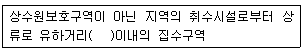
- 25km
- 20km
- 15km
- 10km
(정답률: 알수없음)
80. 폐수처리업자가 등록변경사유에 해당 되는 사항을 변경한 때에는 변경한 날로부터 며칠 이내에 변경등록신청서와 그 관련 서류를 첨부하여 시도지사에게 제출하여야 하는가?
- 5일
- 10일
- 15일
- 30일
(정답률: 알수없음)